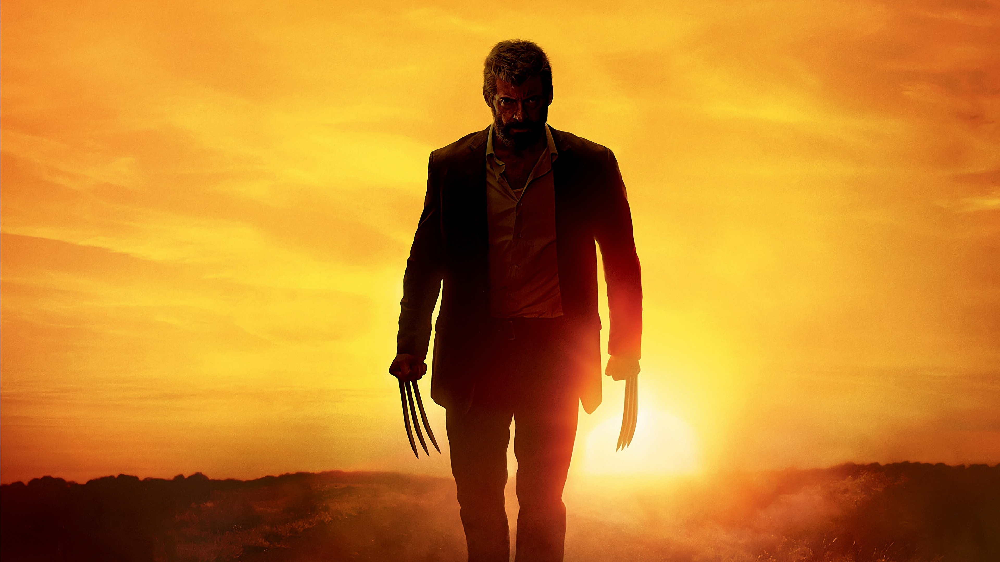

Matrix - 1999
O jovem programador Thomas Anderson é atormentado por estranhos pesadelos em que está sempre conectado por cabos a um imenso sistema de computadores do futuro. À medida que o sonho se repete, ele começa a desconfiar da realidade. Thomas conhece os misteriosos Morpheus e Trinity e descobre que é vítima de um sistema inteligente e artificial chamado Matrix, que manipula a mente das pessoas e cria a ilusão de um mundo real enquanto usa os cérebros e corpos dos indivíduos para produzir energia.
Logan - 2017

Em 2024, os mutantes estão em franco declínio, e as pessoas não sabem o real motivo. Uma organização está transformando as crianças mutantes em verdadeiras assassinas. Wolverine, cansado de tudo e a pedido de um cada vez mais enfraquecido Professor Xavier, precisa proteger a jovem e poderosa Laura Kinney, conhecida como X-23. Enquanto isso, o vilão Nathaniel Essex amplia seu projeto de destruição.
Batman: O Cavaleiro das Trevas - 2008
Após dois anos desde o surgimento do Batman (Christian Bale), os criminosos de Gotham City têm muito o que temer. Com a ajuda do tenente James Gordon (Gary Oldman) e do promotor público Harvey Dent (Aaron Eckhart), Batman luta contra o crime organizado. Acuados com o combate, os chefes do crime aceitam a proposta feita pelo Coringa (Heath Ledger) e o contratam para combater o Homem-Morcego.
O Exterminador do Futuro 2: O Julgamento Final - 1991
O jovem John Connor é a chave para a vitória da humanidade sobre a rebelião das máquinas no futuro. O garoto é alvo de T-1000, um exterminador feito de metal líquido que pode assumir a forma que desejar e que foi enviado do futuro para matá-lo. Outro exterminador, o renovado T-800, também é mandado de volta ao passado para proteger o menino. Enquanto John e sua mãe, Sarah Connor, fogem com o T-800, o garoto cria um vínculo afetivo inesperado com o robô.
Pantera Negra - 2018
Em Pantera Negra, após a morte do rei T'Chaka (John Kani), o príncipe T'Challa (Chadwick Boseman) retorna a Wakanda para a cerimônia de coroação. Nela são reunidas as cinco tribos que compõem o reino, sendo que uma delas, os Jabari, não apoia o atual governo. T'Challa logo recebe o apoio de Okoye (Danai Gurira), a chefe da guarda de Wakanda, da irmã Shuri (Letitia Wright), que coordena a área tecnológica do reino, e também de Nakia (Lupita Nyong'o), a grande paixão do atual Pantera Negra, que não quer se tornar rainha. Juntos, eles estão à procura de Ulysses Klaue (Andy Serkis), que roubou de Wakanda um punhado de vibranium, alguns anos atrás.
Interestelar - 2014

As reservas naturais da Terra estão chegando ao fim e um grupo de astronautas recebe a missão de verificar possíveis planetas para receberem a população mundial, possibilitando a continuação da espécie. Cooper é chamado para liderar o grupo e aceita a missão sabendo que pode nunca mais ver os filhos. Ao lado de Brand, Jenkins e Doyle, ele seguirá em busca de um novo lar.
Projeto X - 2012
Thomas (Thomas Mann), Costa (Oliver Cooper) e JB (Jonathan Daniel Brown) são grandes amigos. Eles não são populares no colégio nem têm namorada. Sonhando dar uma virada na situação, eles planejam transformar o aniversário de Thomas em um acontecimento épico. Para tanto realizam uma grande festa na casa do aniversariante, aproveitando o fato que os pais dele estarão viajando no fim de semana.
Vingadores: Ultimato - 2019

Em Vingadores: Ultimato, após Thanos eliminar metade das criaturas vivas em Vingadores: Guerra Infinita, os heróis precisam lidar com a dor da perda de amigos e seus entes queridos. Com Tony Stark (Robert Downey Jr.) vagando perdido no espaço sem água nem comida, o Capitão América/Steve Rogers (Chris Evans) e a Viúva Negra/Natasha Romanov (Scarlett Johansson) precisam liderar a resistência contra o titã louco.
Vingadores: Guerra Infinita - 2018
Em Vingadores: Guerra Infinita, Thanos (Josh Brolin) enfim chega à Terra, disposto a reunir as Joias do Infinito. Para enfrentá-lo, os Vingadores precisam unir forças com os Guardiões da Galáxia, ao mesmo tempo em que lidam com desavenças entre alguns de seus integrantes.
Anjos da Lei 2 - 2014
Donald E. Knuth é um cientista da computação e matemático norte-americano, amplamente
reconhecido por suas contribuições fundamentais à análise de algoritmos e à sistematização
da programação como disciplina rigorosa. É autor da série The Art of Computer Programming,
obra de referência que consolidou os fundamentos teóricos e práticos da ciência da
computação. Knuth também desenvolveu o sistema de tipografia digital TeX, ainda hoje
amplamente utilizado na produção de textos técnicos e acadêmicos, especialmente nas áreas de
exatas. Seu trabalho foi crucial para estabelecer padrões de precisão, clareza e elegância
na programação, elevando-a ao status de arte e ciência.